HW1: Projective Geometry
and Homography
Number of late days used - 0
Q1: Affine Rectification (30
points)
python main.py -q 1 -c configs/q1_q2.yaml
Input Images and Output Images: Rectified images and
intermediate images with color coded annotation that you
used.
tiles5
facade
chess1
cathedral
strip
Evaluate Angles (more precisely, the cosines) of at least
another 2 pairs of parallel lines before and after
rectification.
tiles5
0.99517, 0.98513
0.99998, 0.99999
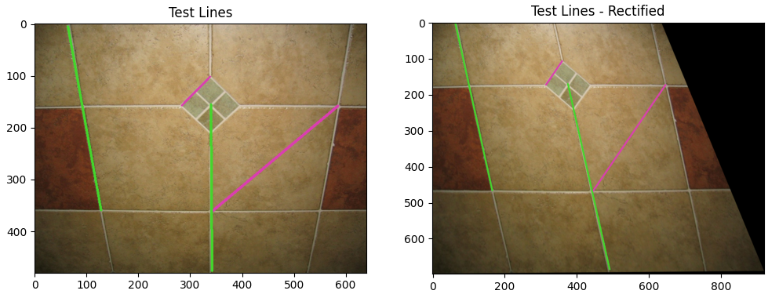
facade
0.98448, 0.99982
0.99996, 0.99999
chess1
0.937868, 0.99915
0.99972, 0.99999
cathedral
0.99855, 0.99622
0.99999, 0.99999
strip
0.99087, 0.99883
0.99992, 0.99999
Brief description of your implementation (i.e., the
algorithm followed with relevant equations and what annotations were
used).
The overall algorithm can be found in the rectify_to_affinity function. The main logic can be
found in the get_affine_rectification_H
function
Algorithm:
Find 2 pairs of originally parallel lines in the image
These are found by manually annotating 2 points for each line.
The pixel coordinates are then stored and a column of ones is added
to move it to \(\mathbb{P}^2\)
space.
The corresponding lines are found by taking the cross product of the
points.
Find where the points of intersection for each of these pairs
These would be calculated using \(p_1^` =
l_{11}^` \times l_{12}^`\) , \(p_2^` =
l_{21}^` \times l_{22}^`\)
Find the line passing through these points. That would give the
imaged line at infinity.
\(l_{\infty}^` = p_1^` \times
p_2^`\)
Since we want to find a transformation such that \(l_{\infty} = \mathbf{H}^{-T}l_{\infty}^`\)
where \(l_{\infty} = [0, 0, 1]^T\) and
\(l_{\infty}^` = [l_1, l_2, l_3]^T\)
Thus, \(\mathbf{H} = \begin{bmatrix}1
& 0 & 0 \\ 0 & 1 & 0 \\ l_1 & l_2 & l_3
\end{bmatrix}\)
Use this to warp the original image back to an affinity.
Q2: Metric Rectification (40
points)
python main.py -q 2 -c configs/q1_q2.yaml
Input Images and Output Images: Rectified images and
intermediate images with color coded annotation that you
used.
tiles5
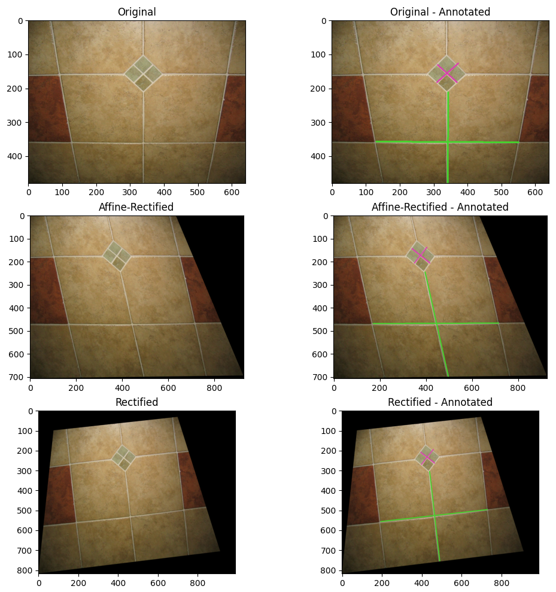
facade
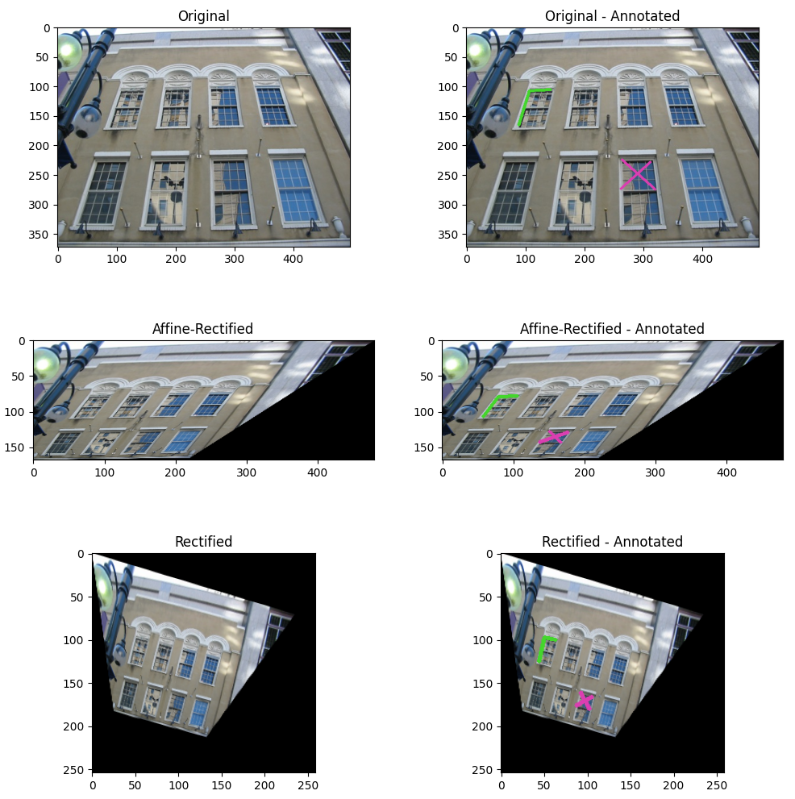
chess1
cathedral
strip
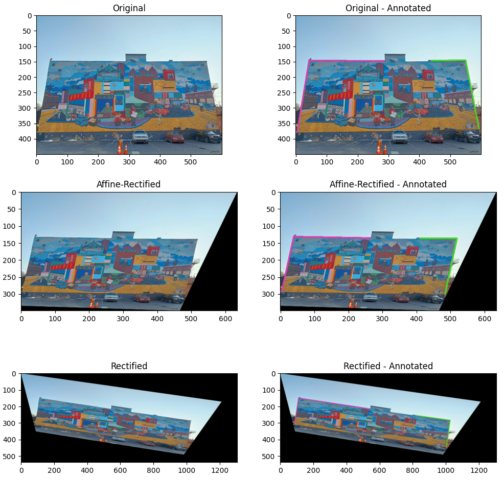
Evaluate Angles (more precisely, the cosines) of at least
another 2 pairs of perpendicular lines before and after
rectification.
tiles5
-0.1543, -0.0235
-0.00035, 0.00052
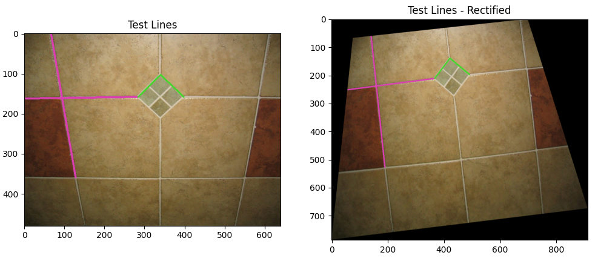
facade
0.3917, -0.01043
0.00035, 0.00004
chess1
-0.1248, 0.1594
0.00095, 0.00432
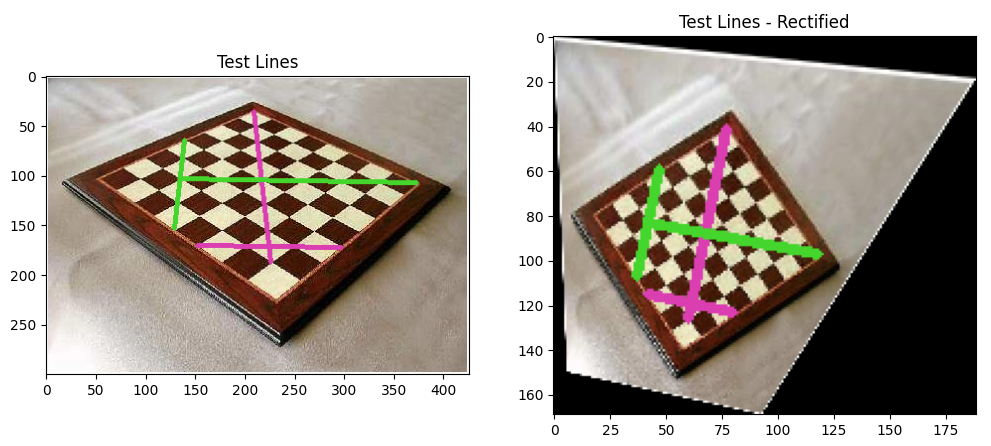
cathedral
0.1221, -0.0311
0.0007, 0.0002
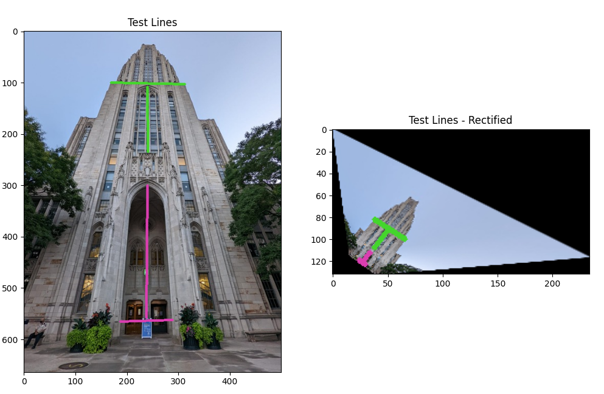
strip
0.0371, 0.0733
0.0003, 0.0005
Brief description of your implementation (i.e., the
algorithm followed with relevant equations and what annotations were
used).
The overall algorithm can be found in the rectify_to_similarity function. The main logic can
be found in the get_similarity_rectification_H
function
Algorithm:
Using the algorithm mentioned in the first question, get the image
to an affinity.
Now, find 2 pairs of originally perpendicular lines in the image
These are found by manually annotating 2 points for each line.
The pixel coordinates are then stored and a column of ones is added
to move it to \(\mathbb{P}^2\)
space.
The corresponding lines are found by taking the cross product of the
points.
For a pair of perpendicular lines, say, \(l\) and \(m\) .
\(l^TC^*_{\infty}m = 0\) \((l^{`T}\mathbf{H}_a)C^*_{\infty}(\mathbf{H}_a^Tm^`)
= 0\) \(l^{`T}\begin{bmatrix} A & 0 \\ 0
& 1 \end{bmatrix}\begin{bmatrix} I & 0 \\ 0 & 0
\end{bmatrix}\begin{bmatrix} A^T & 0 \\ 0 & 1 \end{bmatrix}m^` =
0\) \(l^{`T}\begin{bmatrix} AA^T & 0 \\ 0
& 1 \end{bmatrix}m^` = 0\) When simplified we get the following equation,
\(\begin{bmatrix} l_1^`m_1^` &
l_1^`m_2^` + l_2^`m_1^`\end{bmatrix}\begin{bmatrix} s_{11} \\ s_{12}
\end{bmatrix} = 0\) Here, \(s_{11}, s_{12}\) come from
the symmetric matrix \(AA^T = \begin{bmatrix}
s_{11} & s_{12} \\ s_{12} & 1\end{bmatrix}\)
From the above derivation, it can be seen that we need to find the 2
variables \(s_{11}, s_{12}\) to get
\(A\) and \(\mathbf{H}_a\)
Using the 2 pairs of perpendicular lines, construct the following
matrix
\(\mathbf{L} = \begin{bmatrix}
l_{11}^`m_{11}^` & l_{11}^`m_{12}^` + l_{12}^`m_{11}^` \\
l_{21}^`m_{21}^` & l_{21}^`m_{22}^` + l_{22}^`m_{21}^`
\end{bmatrix}\)
Solve the equation \(\mathbf{L}s =
0\) by finding the nullspace using SVD.
Construct matrix \(A\) and using
that co{nstruct back \(\mathbf{H}_a\) .
The rectification matrix can then be found by taking the inverse i.e
\(\mathbf{H}_a^{-1}\)
Use this to warp the affine rectified image back to a
similarity.
Q3:
Planar Homography from Point Correspondences (30 points)
python main.py -q 3 -c configs/q3.yaml`
Input Images and Output Images: Warped images and
intermediate images with annotation that you used (i.e., corners/point
correspondences).
desk
jose mourinho :)
Brief description of your implementation (i.e., the
algorithm followed with relevant equations and what annotations were
used).
The overall algorithm can be found in the overlay_image function.
Algorithm:
Find 4 pairs of point correspondences using manual annotations.
Need to compute \(\mathbf{H}\) such
that \(\mathbf{x}^` = \mathbf{H}
\mathbf{x}\)
Construct the required matrix as per Direct Linear Transformation
algorithm
For a pair of point correspondences, \(\begin{bmatrix}x^`_1 \\ x^`_2 \\ 1\end{bmatrix} =
\begin{bmatrix}h_1 & h_2 & h_3 \\ h_4 & h_5 & h_6 \\ h_7
& h_8 & h_9\end{bmatrix}\begin{bmatrix}x_1 \\ x_2 \\
1\end{bmatrix}\)
On simplification, \(\begin{bmatrix}x_1
& x_2 & 1 & 0 & 0 & 0 & -x_1^`x_1 &
-x^`_1x_2 & -x^`_1 \\ 0 & 0 & 0 & x_1 & x_2 & 1
& -x_2^`x_1 & -x^`_2x_2 &
-x^`_2\end{bmatrix}\begin{bmatrix}h_1 \\ h_2 \\ h_3 \\ h_4 \\ h_5 \\ h_6
\\ h_7 \\ h_8 \\ h_9\end{bmatrix} = 0\)
Using the 4 pairs, construct a \((8\times9)\) matrix \(A\) and solve the equation \(Ah = 0\) by finding the nullspace using
SVD.
Reshape \(h\) to get the homography
matrix.
Use this to warp the normal image to the new perspective and combine
them to get a composite image.
Q4:
Bonus 1 (10 points) - Metric Rectification using 5 pairs of
perpendicular lines
python main.py -q 4 -c configs/q4.yaml
Input Images and Output Images: Rectified images and
intermediate images with color coded annotation that you used. Annotate
the lines that were used.
tiles5
facade
tiles3
cell
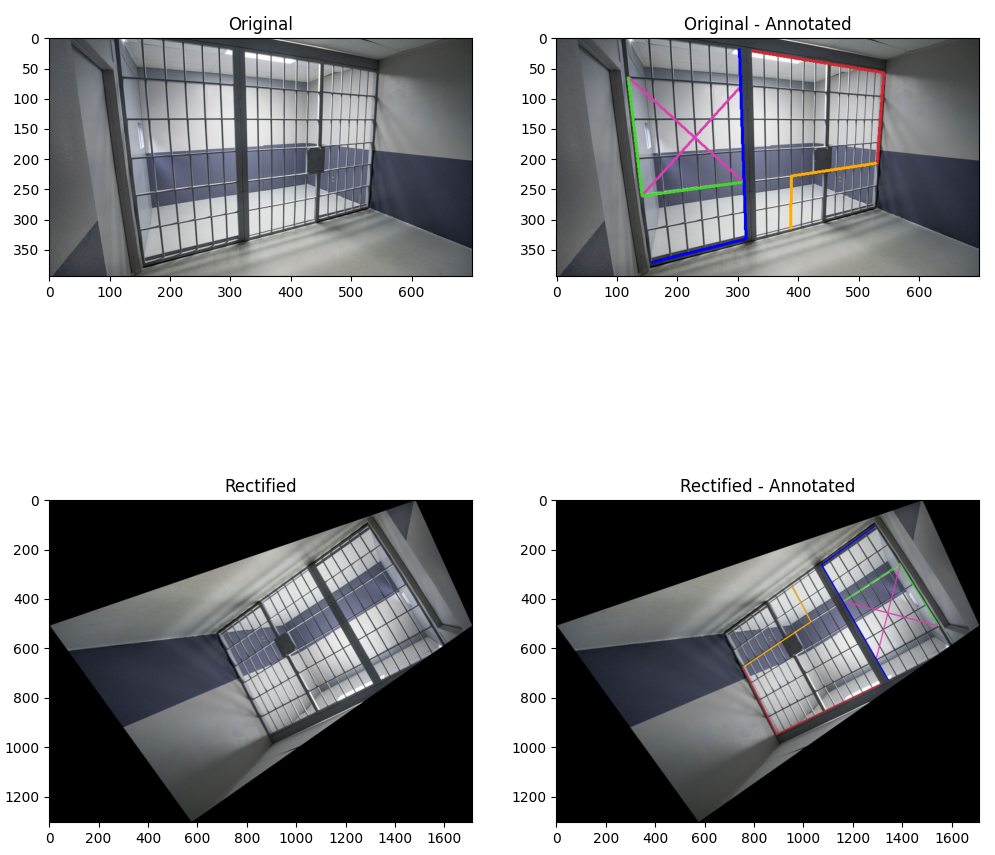
pacement
Angles (more precisely, the cosines) of at least 3 pairs of
perpendicular lines before and after rectification.
tiles5
-0.0633, -0.0178, 0.1851
0.00028, 0.00639, 0.0131
facade
-0.3069, 0.0179, 0.0196
0.00137, 0.00091, 0.00027
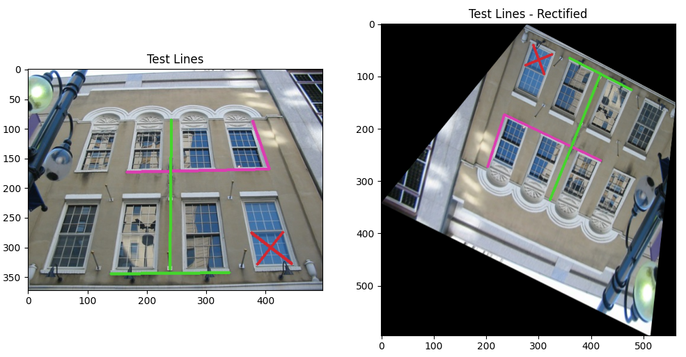
tiles3
-0.0311, 0.46738, -0.5143
0.0016, -0.0042, 0.00000
cell
0.14989, 0.39105, 0.3047
0.00096, 0.01819, 0.0161
pavement
-0.2902, -0.7477, -0.8504
-0.0144, -0.0081, -0.0069
Brief description of your implementation.
The overall algorithm can be found in the direct_rectify_to_similarity function.
Algorithm:
Find 5 pairs of originally parallel lines in the image
These are found by manually annotating 2 points for each line.
The pixel coordinates are then stored and a column of ones is added
to move it to \(\mathbb{P}^2\)
space.
The corresponding lines are found by taking the cross product of the
points.
The imaged dual conic at infinity can be defined as \(C^{`*}_{\infty} = \begin{bmatrix}a & b/2 &
d/2 \\ b/2 & c & e/2 \\ d/2 & e/2 &
f\end{bmatrix}\)
Thus, need to find these variables - \(a,b,c,d,e,f\)
\(\begin{bmatrix}l_1^` & l_2^` &
l_3^`\end{bmatrix}C^{`*}_{\infty}\begin{bmatrix}m_1^` \\ m_2^` \\
m^`_3\end{bmatrix} = 0\) \(\begin{bmatrix}l_1^`m_1^` &
\frac{l_1^`m_2^` + l_2^`m_1^`}{2} & l_2^`m_2^` &
\frac{l_1^`m_3^` + l_3^`m_1^`}{2} & \frac{l_3^`m_2^` +
l_2^`m_3^`}{2} & l_3^`m_3^`\end{bmatrix}\begin{bmatrix}a \\ b \\ c
\\ d \\ e \\ f\end{bmatrix} = 0\)
Using the 5 pairs of perpendicular lines, construct the \((5 \times 6)\) matrix \(L\) as shown above.
Solve the equation \(Lc = 0\) by
finding the nullspace using SVD.
Construct \(C^{`*}_{\infty}\) and
decompose it using SVD as \(U
\begin{bmatrix}\sigma & 0 \\ 0 & 0\end{bmatrix}U_T\)
Construct the projective transformation matrix \(H = U\sqrt{\sigma}\)
Required rectification transformation can be found by inversing this
matrix i.e. \(H_{-1}\)
Use this to warp the original image back to a similarity.
Q5:
Bonus 2 (10 points) - Creative - Multiple images overlay
python main.py -q 5 -c configs/q5.yaml
Input Images and Output Images.
Intermediate - TA1
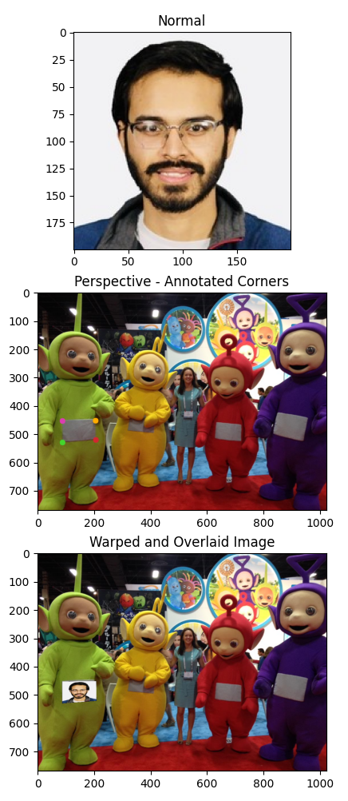
Intermediate - TA2
Intermediate - TA3
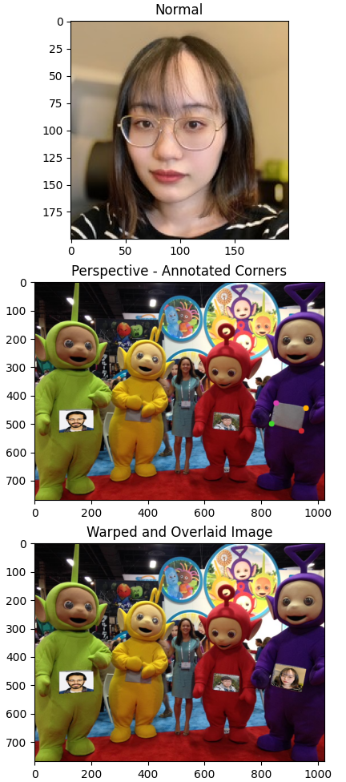
Final
:)
Brief description of your implementation.
The overall algorithm can be found in the overlay_multiple_images function.
Algorithm: - The logic is the same as that for q3. - However, it is
done multiple number of times and each time the perspective image is
obtained from the previous composite/overlaid image.